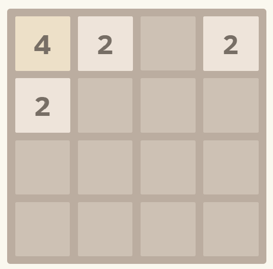
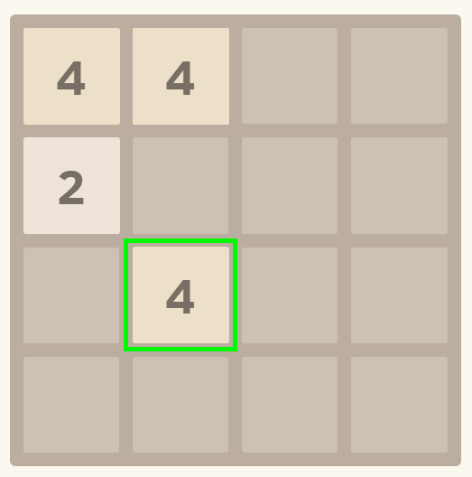
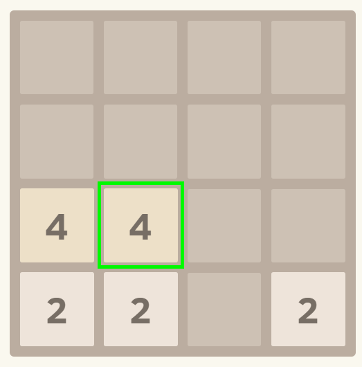

Alpha2048
Reinforcement learning in the browser
Lian Li
@Chimney42
Chimney42
Software Developer @ Datenfreunde
Machine Learning enthusiast
The game

Rules
4 x 4 - grid
each turn take action $\alpha$; $\alpha \in \big\{ 0, 1, 2, 3 \big\} $
after move, new tile added to empty space
(90% $v=2$, 10% $v=4$)
merge two tiles with value $v \rightarrow$ one tile with value $2v$
no more moves are possible
one tile with 2048 present
tiles with value $v$ are merged $ \rightarrow 2v$ is added to score
Alpha2048
JavaScript
Supervised Learning
synaptic
neural network library for javascript
classification
prior experience
First iteration
Goal: gather data
simulate all actions
does score increase?
random move
{
boardstate : [0, 2, 0, ..., 8],
actions : [0, 1, 0, 1]
}
Second iteration
Goal: compare trained network
train neural network
predict score increase
move where probability highest
Conclusion
Did not work great
focus only on next state
needs more foresight
Reinforcement Learning
markov decision process
delayed reward
exploration vs exploitation
Temporal DifferenceLearning
dynamic programming
monte carlo methods
REINFORCEjs
const state = [0, 2, 2, ..., 0];
const action = agent.act(state);
const reward = calculateReward();
agent.learn(reward);
Reward?
First iteration
Reward = Score
find other reinforcement value
Second iteration
$ tileRating = \frac{\sum tileValues}{tileCount}$

Score: 0 | Rating: 2.5
Left

Score: 4 | Rating: 3.5
Down

Score: 0 | Rating: 2.8
$ reward = (\frac{score}{averageScore}) \times (\frac{rating}{averageRating})$
Third iteration
decay $\epsilon$ over time
(exploration)
Conclusion
seems to be learning
but...
boardsize
flat input
one hidden layer
Next
meta parameters
const spec = {
update: 'qlearn', // qlearn | sarsa
gamma: 0.5, // discount factor
epsilon: 0.2, // epsilon-greedy policy
alpha: 0.02, // value function learning rte
experience_add_every: 5, // number of time steps before we add another experience to replay memory
experience_size: 100000, // size of experience replay memory
learning_steps_per_iteration: 100,
tderror_clamp : 1.0; // for robustness
num_hidden_units: 256 // number of neurons in hidden layer
};
python
Convolutional network
Links
Deep Reinforcement Learning 2048 with Python